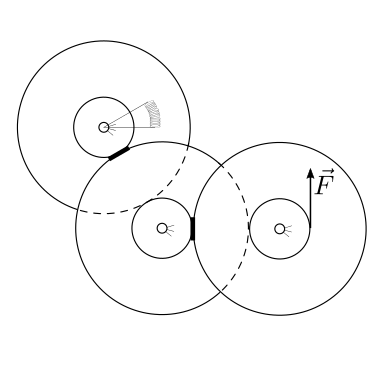
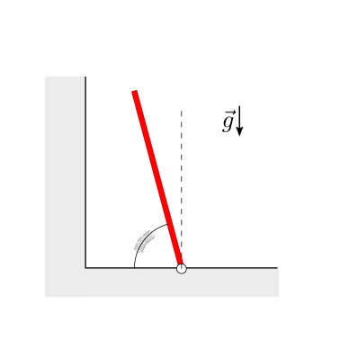

8.4. Problemi#
Questa pagina contiene esercizi di statica suddivisi in quattro categorie: statica del punto materiale, sistemi di punti materiali, corpi rigidi, e una sezione varia. Gli esercizi sono progettati per studenti con una buona conoscenza della statica e delle sue applicazioni.
8.4.1. Statica del punto materiale#
Exercise 8.1 (Equilibrio di un punto materiale)
Un punto materiale è soggetto a due forze: \(F_1 = 20 \, \text{N}\) inclinata di \(30^\circ\) rispetto all’orizzontale e \(F_2 = 10 \, \text{N}\) orizzontale. Determina una terza forza \(F_3\) necessaria per mantenere il punto in equilibrio.
Exercise 8.2 (Forza normale e attrito)
Un blocco di \(10 \, \text{kg}\) è fermo su un piano inclinato di \(20^\circ\). Calcola la forza normale e la forza di attrito statico necessarie per mantenere l’equilibrio.
Exercise 8.3 (Corde in equilibrio)
Un punto materiale è sospeso mediante due corde: la prima forma un angolo di \(45^\circ\) con l’orizzontale, e la seconda un angolo di \(60^\circ\). La massa sospesa è \(15 \, \text{kg}\). Calcola le tensioni nelle due corde.
Exercise 8.4 (Equilibrio su un piano inclinato)
Un blocco di massa \(5 \, \text{kg}\) è posizionato su un piano inclinato liscio di \(30^\circ\). Qual è la forza \(F\) necessaria per mantenerlo fermo, applicata parallelamente al piano?
Exercise 8.5 (Forze in una rete di cavi)
Un palo verticale è tenuto in posizione da due cavi inclinati. Il primo cavo forma un angolo di \(40^\circ\) con l’orizzontale e il secondo \(50^\circ\). Se il peso del palo è \(200 \, \text{N}\), calcola le tensioni nei cavi.
8.4.2. Sistemi di punti materiali#
Exercise 8.6 (Centro di massa di due punti)
Due masse, \(m_1 = 3 \, \text{kg}\) e \(m_2 = 7 \, \text{kg}\), sono posizionate rispettivamente nei punti \(A(0, 0)\) e \(B(4, 0)\). Determina la posizione del centro di massa del sistema.
Exercise 8.7 (Equilibrio di un sistema di tre punti)
Tre masse, \(m_1 = 2 \, \text{kg}\), \(m_2 = 3 \, \text{kg}\), e \(m_3 = 5 \, \text{kg}\), sono posizionate nei punti \(A(0, 0)\), \(B(0, 3)\) e \(C(4, 0)\). Calcola il centro di massa del sistema.
Exercise 8.8 (Forza risultante su un sistema)
Un sistema è composto da due blocchi, \(m_1 = 10 \, \text{kg}\) e \(m_2 = 15 \, \text{kg}\), collegati da una fune inestensibile. Il sistema è posto su una superficie orizzontale liscia e viene tirato con una forza di \(50 \, \text{N}\). Calcola l’accelerazione del sistema e la tensione nella fune.
Exercise 8.9 (Forze interne e centro di massa)
Un sistema di tre masse uguali \(m = 2 \, \text{kg}\) si trova nei punti \(A(1, 0)\), \(B(0, 1)\) e \(C(-1, 0)\). Qual è la forza risultante se tutte le masse sono soggette a una forza \(F = 5 \, \text{N}\) diretta lungo \(x\)?
Exercise 8.10 (Centro di massa su un piano inclinato)
Due blocchi di massa \(m_1 = 3 \, \text{kg}\) e \(m_2 = 7 \, \text{kg}\) sono collegati e posti su un piano inclinato di \(30^\circ\). Trova la posizione del centro di massa rispetto al punto più basso del piano.
8.4.3. Statica del corpo rigido#
Exercise 8.11 (Bilancia a due bracci)
Una bilancia a due bracci ha lunghezza totale \(1,2 \, \text{m}\) e il fulcro è posto al centro. Se una massa di \(5 \, \text{kg}\) è appesa a \(20 \, \text{cm}\) dal fulcro su un lato, qual è la massa necessaria dall’altro lato per bilanciare il sistema?
Exercise 8.12 (Porta incernierata)
Una porta rettangolare larga \(1,0 \, \text{m}\) e alta \(2,0 \, \text{m}\) ha una massa di \(20 \, \text{kg}\). Qual è la forza esercitata dalle cerniere superiori e inferiori in condizioni di equilibrio statico?
Exercise 8.13 (Traversa uniformemente caricata)
Una trave orizzontale lunga \(6,0 \, \text{m}\) e del peso di \(200 \, \text{N}\) è sostenuta alle estremità. Un peso di \(100 \, \text{N}\) è appeso a \(2,0 \, \text{m}\) da un’estremità. Calcola le reazioni vincolari alle estremità della trave.
Exercise 8.14 (Scale in equilibrio)
Una scala lunga \(5,0 \, \text{m}\) e del peso di \(50 \, \text{N}\) è appoggiata su un muro liscio e sul pavimento ruvido. Se la scala forma un angolo di \(60^\circ\) con il pavimento, calcola la forza di attrito necessaria per mantenerla ferma.
Exercise 8.15 (Braccio di leva con peso)
Un’asta di \(4,0 \, \text{m}\) è sospesa orizzontalmente su un perno a \(1,0 \, \text{m}\) da un’estremità. Una forza \(F = 80 \, \text{N}\) agisce verso il basso a \(2,0 \, \text{m}\) dall’estremità opposta. Determina la reazione vincolare al perno.
8.4.4. Miscellanea#
Exercise 8.16 (Trave con cavo)
Una trave lunga \(6,0 \, \text{m}\) e del peso di \(300 \, \text{N}\) è fissata a una parete con una cerniera e sostenuta da un cavo a \(4,0 \, \text{m}\) dall’estremità della parete. Il cavo forma un angolo di \(30^\circ\) con la trave. Calcola la tensione nel cavo.
Exercise 8.17 (Sistema articolato)
Una struttura triangolare è composta da tre aste rigide uguali di lunghezza \(2,0 \, \text{m}\) e connesse in modo articolato. Calcola le forze interne negli elementi se il triangolo è appeso in equilibrio verticale e caricato con \(F = 100 \, \text{N}\) alla sommità.
Exercise 8.18 (Fune con tensione)
Una fune orizzontale lunga \(3,0 \, \text{m}\) sostiene un peso di \(50 \, \text{N}\) al centro. Se gli estremi sono fissati a un’altezza uguale e la fune forma un angolo di \(10^\circ\) agli estremi, calcola la tensione massima nella fune.
Exercise 8.19 (Struttura con due travi)
Due travi di uguale lunghezza \(L = 4,0 \, \text{m}\) sono connesse ad angolo retto e fissate a una parete. Una forza \(F = 200 \, \text{N}\) agisce verticalmente verso il basso sul punto di connessione. Calcola le reazioni alle estremità fissate.
Exercise 8.20 (Equilibrio di un ponte)
Un ponte di lunghezza \(20,0 \, \text{m}\) e peso \(10.000 \, \text{N}\) è sostenuto a entrambe le estremità. Un veicolo di \(2.000 \, \text{N}\) è fermo a \(5,0 \, \text{m}\) da un’estremità. Calcola le reazioni vincolari alle estremità.
Data la massa \(m\) della massa puntiforme appeso tramite due fili inestensibili ideali di lunghezza \(L_1\) e \(L_2\) note, si calcolino le reazioni a terra.

Soluzione.
Data la massa \(m\) della massa puntiforme appeso tramite due fili inestensibili ideali di lunghezza \(L_1\) nota e \(L_2\) variabile, si calcolino le reazioni a terra in funzione della lunghezza del filo \(2\).

Soluzione.
Data la massa \(m\) della massa puntiforme appeso tramite un filo inestensibile ideale di lunghezza \(L\) e una molla di costante elastica \(k\) e lunghezza a riposo \(x_0\) collegata a terra in un punto distante \(H\) dal punto a terra dove è collegato il filo, si calcoli:
la posizione del punto
la lunghezza della molla
le reazioni vincolari a terra nella configurazione di equilibrio.

Soluzione.
Data \(m\), \(\mu^s\), trovare l’angolo massimo \(\theta_{\max}\) per il quale esiste una condizione di equilibrio.

Soluzione.
Data \(m\), \(M\), \(\mu^s\) tra i due solidi, si chiede di calcolare:
la risultante delle azioni scambiate tra i due corpi
la risultante delle reazioni vincolari a terra agenti sul solido blu,
nella condizione di equilibrio del sistema, nell’ipotesi che l’attrito tra solido blu e terra sia trascurabile. Verificare le condizioni limite tra \(\theta\) e \(\mu^s\) affinché l’equilibrio sia possibile

Soluzione.
Data la massa \(m\) del blocco rosso, la costante elastica \(k\) della molla lineare ideale, con lunghezza a riposo \(\ell_0\), viene chiesto di:
determinare la lunghezza della molla nella condizione di equilibrio, nell’ipotesi che l’attrito tra blocco rosso e piano inclinato sia trascurabile
determinare le possibili condizioni di equilibrio, nell’ipotesi che l’attrito statico tra blocco rosso e piano inclinato sia \(\mu^s\)
Soluzione.
Data la massa \(m\) del blocco rosso, il raggio \(R_1\), \(R_2\) delle due carrucole, si chiede di determinare la forza \(\vec{F}\) da applicare nella condizione di equilibrio, nell’ipotesi di fili inestensibili e carrucole ideali e senza massa.
Si chiede poi di ripetere il calcolo nell’ipotesi in cui la massa delle carrucole non sia trascurabile, ma siano \(M_1\) per la carrucola vincolata a terra, e \(M_2\) per la carrucola non vincolata a terra.

Soluzione.
Nel meccanismo di un orologio i 3 componenti che devono guidare il moto delle lancette dei secondi, dei minuti e delle ore, connessi «in cascata» tramite ingranaggi (con rapporto dei raggi \(1:60\) todo scriverlo esplicitamente?). Conoscendo la costante elastica \(k\) e la compressione \(\Delta \theta\) della molla che guida il componente che guida la lancetta delle ore, si chiede di:
determinare la forza necessaria da applicare alla lancetta dei secondi nel punto indicato nell’imagine, necessaria a garantire la posizione di equilibrio
le reazioni vincolari in corrispondenza delle cerniere che collegano a terra i 3 componenti, nell’ipotesi che non si scambino forze in direzione radiale.

Soluzione.
Data la lunghezza \(L\) e la massa \(m\) dell’asta rigida con distribuzione di massa uniforme e il coefficiente di attrito stativo \(\mu^s\) tra asta e superficie orizzontale, si chiede di:
determinare la condizione limite dell’equilibrio
determinare le reazioni a terra nell’ipotesi che l’attrito sulla superficie verticale sia trascurabile

Soluzione.
Data la lunghezza \(L\) e la massa \(m\) dell’asta rigida incernierata a terra, e la costante elastica \(k\) della molla rotazionale, si chiede di:
calcolare la condizione di equilibrio
le reazioni vincolari sull’asta discutendo i due casi determinati dalla condizione di appoggio dell’estremo superiore dell’asta sulla parete verticale.

Soluzione.
Testo del problema…
Soluzione.
Testo del problema…

Soluzione.
Testo del problema…

Soluzione.
Testo del problema…

Soluzione.
todo Equilibrio di un corpo appoggiato…esempio che mostra come la retta di applicazione del peso deve cadere nella base di appoggio; qui non è possibile introdurre l’accelerazione del sistema (todo aggiungere esercizio nel capitolo della dinamica), ma si può fare un esercizio con superficie di appoggio permendicolare e non al campo di gravità locale. L’unica cosa che conta è la direzione relativa tra superficie di appoggio e forza di massa. Rimandare all’esercizio sulla dinamica con collegamento
Soluzione.
todo Sollevamento di un peso sbilanciato, come mostrato in un «video virale»